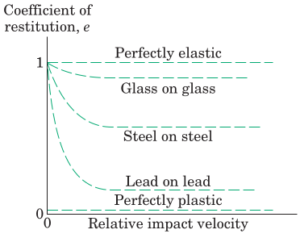
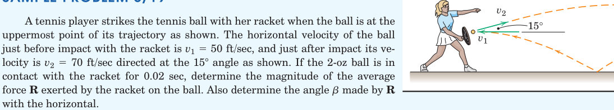
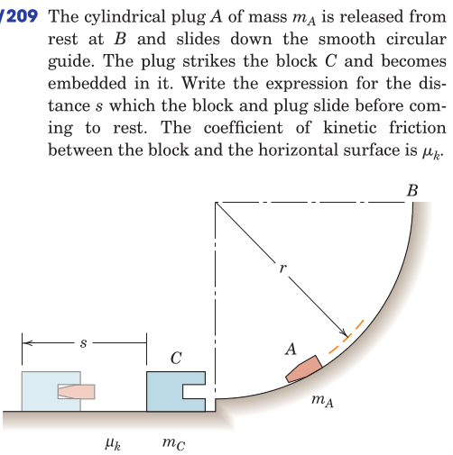

Colliding bodies with a relatively large contact force over a very brief interval of time.
The impact process:
[free-hand sketch of the phases of impact: approach, engagement, separation]
Types of impact:
Here both masses travel in the same direction, before and after impact
[free-hand sketch of the collinear collision phases]
Given the two masses and initial velocities \(v^a\) and \(v^b\) (note only magnitudes of the forces are shown as the direction is known) we inquire the separation velocities \(v'^a\) and \(v'^b\).
The two equations required are obtained from
This is a measure of the energy loss during impact between the deformation and rebound phases. \[ e = \frac{\mathrm{impulse_{rebound}}}{\mathrm{impulse_{deform}}} = \frac{\int_0^{t_p} F_r dt}{\int_{t_p}^T F_d dt} \]
[free-hand sketch of the impact phases with an adjacent time-force diagram]
The impulse period \([0,T]\) is split into the deformation period \([0,t_p]\) and the rebound period \([t_p,T]\), where \(t_p\) indicates the peak time.
Using the impulse-momentum relations we can write (for both particles separately):
Upon substitution into the coefficient of restitution formula for both particles and eliminating \(\bar{v}\) we obtain \[ e = \frac{v'^b - v'^a}{v^a - v^b} \] which is the second equation required to solve for the unknown rebound velocities.
Note that \(e\) is an empirical constant (similar to the coefficient of friction) obtained from experiments between different materials.

The energy lost during the impact due to \(e<1\) can be found by subtracting the sum of kinetic energies for the system of particles during the approach and separation phases. \[ \Delta E = \Delta T \] The loss of energy is attributed to
[free-hand sketch of the phases of oblique central impact]
Given initial conditions \(\boldsymbol{v}^a\) and \(\boldsymbol{v}^b\), we find the velocity components in the directions normal and tangential to impact. The four unknowns of the separation phase become \(v'^a_n\), \(v'^a_t\), \(v'^b_n\) and \(v'^b_t\)
The four equations that can be used to solve these are


From Hibbeler, Engineering Mechanics: Dynamics: Chapter 15: